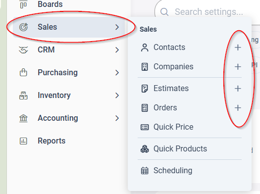

Síguelo en orden, una sección a la vez. Abre la sección 1, termínala, luego toca Siguiente al final para continuar. Una orden empieza igual que un estimado, con + New Order. Esta es la versión corta; las secciones enlazan a los estándares completos detrás de ellos.

1. La Pestaña de Ventas
Un vistazo rápido a la pestaña Sales, y cómo los signos de más crean un contacto, una compañía, un estimado o una orden nuevos.
Abrir la sección 1 →2. Iniciar una Orden o un Estimado
Inicia la orden o el estimado y termina los detalles. Con el video de recorrido.
Abrir la sección 2 →
3. Agregar las Partidas
Agrega lo que van a comprar, una línea por cada cosa. Con el video de recorrido.
Abrir la sección 3 →4. Construye Cada Línea
El nombre de la línea, la Descripción del Cliente y los componentes, construidos para coincidir en cada línea.
Abrir la sección 4 →
5. Agrega las Notas
Las instrucciones viven en las pestañas de Notas de la partida. Las notas de un trabajo nunca van en Slack. Con el video.
Abrir la sección 5 →6. Usa el Chat para Conversar
El Chat de la orden es donde vive la conversación sobre un trabajo, para que se quede con la orden.
Abrir la sección 6 →
7. Revísalo y Guarda
Cuatro revisiones rápidas, y la orden o el estimado queda listo para el equipo.
Abrir la sección 7 →